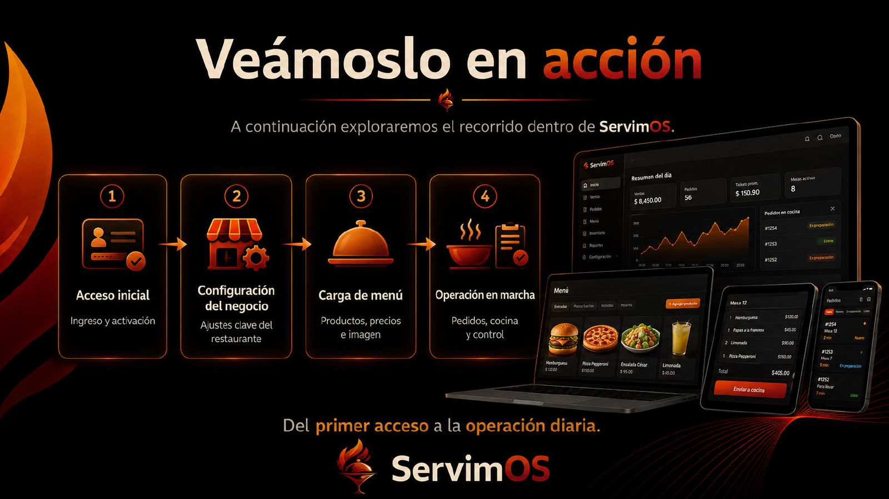
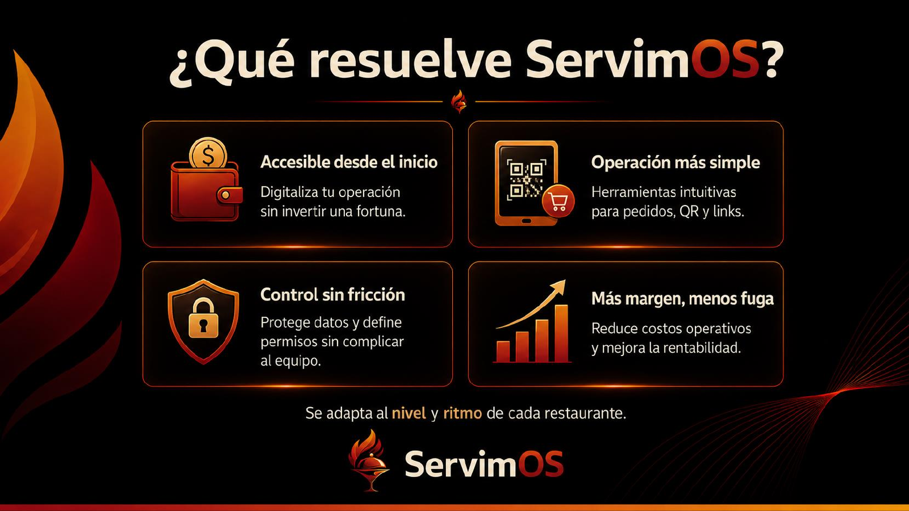

Sistema operativo para restaurantes
Controla tu operación sin gastar una fortuna.
ServimOS digitaliza pedidos, mesas, QR, cocina, barra, caja, reportes y permisos en una plataforma pensada para restaurantes reales, black kitchens y equipos que necesitan vender más con menos fuga operativa.
Mesa 12
$405.00Qué resuelve
Más control, menos complicaciones.
La operación diaria se rompe por fugas pequeñas: pedidos dispersos, errores de cocina, permisos mal definidos, cobros poco claros y dependencia de plataformas con comisión.
Accesible desde el inicio
Digitalización sin inversión inicial exagerada ni instalaciones pesadas.
Operación más simple
Pedidos por QR, links para WhatsApp, comandas y cocina desde el mismo flujo.
Control sin fricción
Roles para administrador, caja, cocina, barra y meseros sin bloquear al equipo.
Más margen, menos fuga
Menos retrabajo, menos pedidos perdidos y más venta directa para el negocio.
Módulos principales
Todo conectado desde sala hasta cobro.
POS y comandas
Captura pedidos internos, pagos, estados y seguimiento de cada comanda.
QR en mesa
El cliente ordena desde la mesa y el pedido entra al flujo operativo.
Links por WhatsApp
Canal directo para vender sin depender completamente de apps de delivery.
KDS cocina/barra
Estados por área, tiempos, estaciones configurables y comandas listas.
Roles de personal
Permisos por perfil para proteger caja, reportes, configuración y datos.
Reportes
Lectura de ventas, operación, tiempos, rentabilidad y fugas a corregir.
Del primer acceso a la operación diaria
Configura, vende y controla en minutos.
- Acceso inicial: crea tu cuenta y activa tu sucursal.
- Configuración: define mesas, roles, carta, caja y sucursal.
- Carga de menú: productos, categorías, extras, precios e imagen.
- Operación: pedidos, cocina, barra, cobro y reportes.


Demo del producto
Ve ServimOS trabajando en una operación real.
El video presenta el recorrido operativo: acceso, configuración, carta, pedidos, KDS y control diario desde la misma plataforma.
Modelo SaaS
Mensualidad clara para crecer por sucursal.
Una base simple para iniciar y escalar sin cambiar de sistema cuando el negocio crece.
$2,000 MXN / mes
Incluye una sucursal con operación principal: mesas, comandas, QR, KDS, caja y reportes.
- + $500 MXN / mes por sucursal adicional
- + $1,000 MXN / mes por organización multi-sucursal
- Planes ajustables según volumen y soporte
ServimOS en acción
Agenda una demo con tu flujo real.
Podemos montarte un recorrido con tus mesas, carta, roles y sucursales para validar cómo se vería la operación antes de contratar.